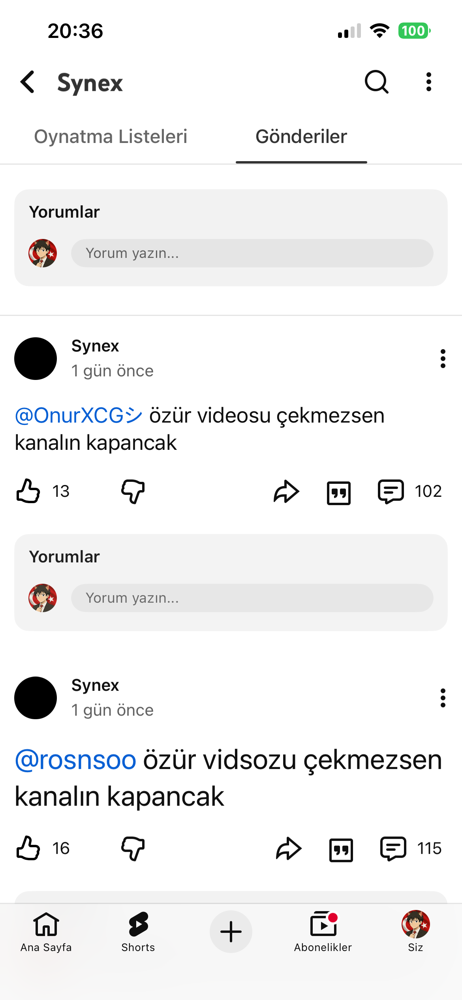
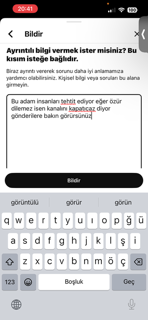
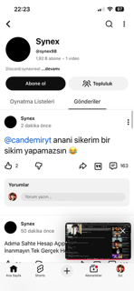

SYNEX98'i bazı kişiler bilir bu kanalı genellikle "can demir" adlı kanalın izleyicileri bilir ve evet bu kanalı konuşucağız 1- ne yapar SYNEX98 genellikle insanları tehtid eder özür videosu çek diye zorlar

2- nasıl bildiririm resimdeki metni "zorbalık" diye @synex98 kanalını bildirin tüm her şeyini seçin

ve bu SYNEX98 can demire küfür etti

ve bu kadar eğer artarsa yeni haber gelir